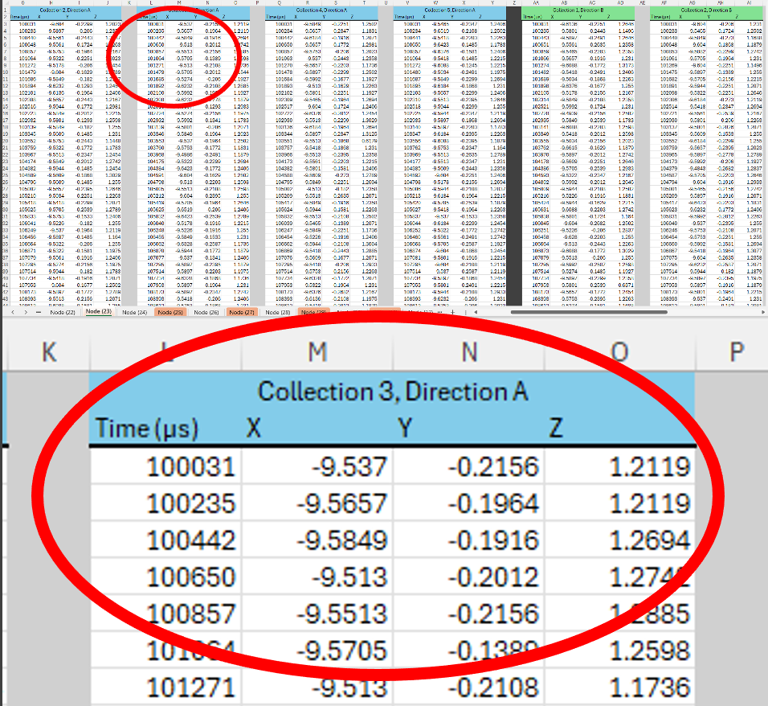
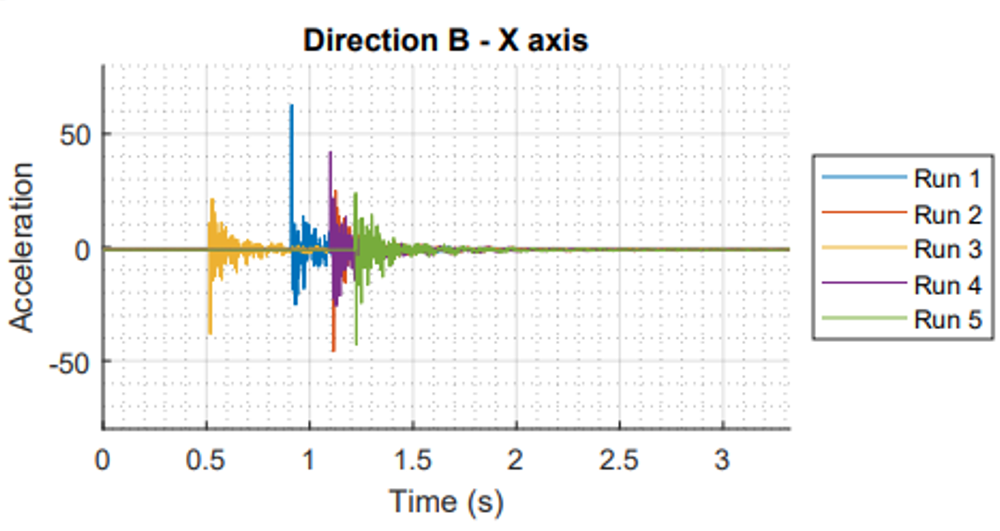
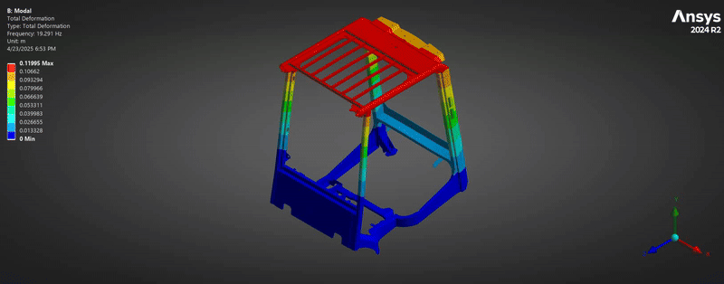
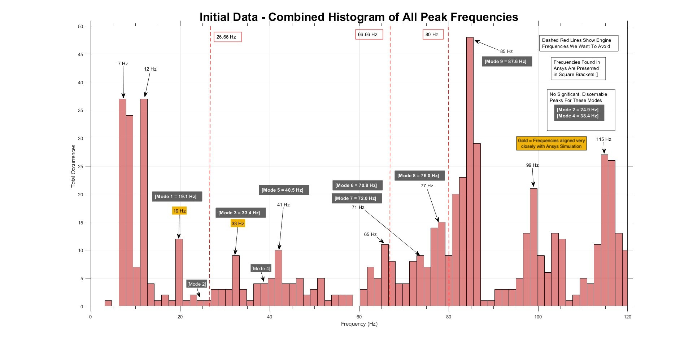
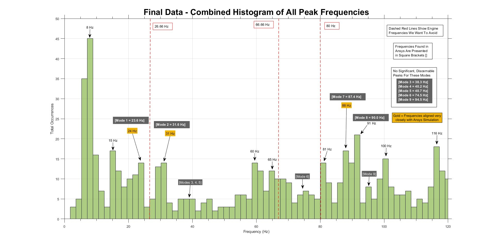

Overview
The Problem
Forklift operators are exposed to sustained vibration and noise generated by the engine and hydraulic systems. When the engine's operating frequencies align with the natural frequencies of the overhead guard, resonance amplifies the noise and vibration reaching the operator — a long-term occupational health concern.
Hyster-Yale tasked our team — Modal Minds — with modifying a physical overhead guard they provided, shifting its resonance frequencies away from the engine's key excitation points. Because the same OHG pairs with engines rated at 800, 2000, and 2400 RPM, all three had to be treated as separate excitation sources. The relevant frequency is each engine's 2nd order frequency — double the RPM-derived value, since these are 4-cylinder engines whose strongest vibration hits at twice rotational speed — giving target frequencies of 26.66 Hz, 66.66 Hz, and 80 Hz to avoid.
3×
Engine Frequencies to Avoid
2 tests
Initial & Final Validation
| Engine Rating |
RPM |
2nd Order Frequency |
Target Shift Range |
| 800 RPM-rated engine | 800 | 26.66 Hz | 32 – 53 Hz |
| 2000 RPM-rated engine | 2000 | 66.66 Hz | 72 – 73 Hz |
| 2400 RPM-rated engine | 2400 | 80 Hz | 88 – 96 Hz |
The same OHG design can be paired with engines rated at any of these three speeds, so all three had to be treated as separate excitation sources — not just different states of one engine.
Scope
Modifying a single overhead guard isn't, on its own, a business-critical deliverable — Hyster-Yale could have shelved the result and moved on. What made it worth their time was the underlying question: can resonance frequencies in a structure like this be deliberately and predictably shifted, using accessible tools and a process their own engineers could repeat? We delivered a working demonstration of that process on this guard, not a finished, ready-to-apply toolkit — but we did establish that the simulate-modify-verify loop works and the physical testing method is sound, giving the next iteration of this work a clear place to start.
Approach
Project Timeline
The approach centered on a repeatable simulate-modify-verify loop — iterating on the OHG design in Ansys until the model's modes cleared the engine's excitation frequencies, then physically fabricating and testing that final design to confirm the predicted shift held up on the real structure.
01
Simulate in Ansys
Ran modal FEA on the unmodified overhead guard to identify its first nine natural frequencies and mode shapes.
→
02
Make Large Changes, Resimulate
Applied significant structural modifications to the model and re-ran the modal simulation to see how far — and in which direction — the modes would move.
→
03
Refine & Iterate
Repeated cycles of smaller, targeted changes and resimulation, converging the modes away from the 26.66 / 66.66 / 80 Hz engine excitation frequencies.
↓
04
Final Model
Locked in a modified design predicted to shift all nine modes clear of the target engine frequencies.
→
05
Make Physical Changes
Fabricated the final model's structural modifications onto the real overhead guard frame.
→
06
Verify by Physical Testing
Ran the 38-node impact-hammer test on both the initial (unmodified) and final (modified) guard to check the real structure's response against the Ansys predictions.
Outcome
The team delivered a modified overhead guard with frequencies shifted away from the engine's excitation points, in both simulation and physical testing — though we ran out of time to fully validate the physical test data was clean (see testing limitations below).
As noted above, the final design combined multiple changes — gusset placement, stiffening, mass distribution — at once rather than testing each in isolation. If we did this again: change one variable, test, revert, then test the next — isolating each effect rather than only validating the combined result.
Given the complexity, this read as much as a proof-of-concept and learning experience as a finished solution — our sponsor, himself a relatively early-career engineer, repeatedly noted how complex this was for an undergraduate capstone.
Methodology
Testing Method
We designed a custom data acquisition system built around ICM-20649 tri-axial accelerometers interfaced with Arduino microcontrollers over SPI. I interpreted the accelerometer datasheets and configured the 8-bit control registers in C++ to set the measurement range, sample rate, and output format appropriate for our frequency range of interest (0–120 Hz).
01
Hardware Setup
Configured ICM-20649 accelerometers via SPI, programmed 8-bit registers in C++ to set ±8g range and ~300 Hz sample rate. Designed wiring harness for consistent node-to-node repositioning.
02
38-Node Test Procedure
Defined 38 measurement nodes distributed across the overhead guard surface. Each node was tested in two directions (A and B) across all three axes (X, Y, Z) to capture the full 3D vibration response of the structure.
03
Impulse Excitation
Applied controlled impulse excitation to the structure at each node while recording the time-domain acceleration response with the DAQ system.
04
FFT Analysis in MATLAB
Processed raw time-domain data through a Fast Fourier Transform pipeline in MATLAB to extract peak frequencies at each node. Aggregated results into combined histograms across all nodes and directions to identify the dominant modal frequencies of the structure.
05
Before & After Comparison
Ran the full test procedure on the unmodified OHG (Initial Test) and again after structural modifications were fabricated and applied (Final Test). Compared histograms against Ansys simulation predictions and target frequency ranges.
Process Deep-Dive
From Raw Signal to Histogram
Each strike generated a burst of raw accelerometer readings that, on their own, said nothing about resonance. Turning 380 individual data sets (5 runs × 2 strike directions × 38 nodes) into a clear picture of the structure's natural frequencies took a five-stage pipeline, run in MATLAB for both the initial and final overhead guard.
01

Collect Raw Acceleration Data
Each hammer strike was logged as raw time-vs-acceleration data across X, Y, and Z axes, recorded straight from the Arduino serial monitor into Excel.
→
02

Plot Relative to Frame Axes
Raw values were reoriented to a universal frame coordinate system and plotted as acceleration vs. time — one plot per node, direction, and axis (38 × 6 subplots).
→
03

Apply FFT
A Fast Fourier Transform converted each time-domain signal into a frequency spectrum, revealing which frequencies the structure responded to most strongly.
↓
04
Find Peaks Programmatically
A MATLAB peak-finding routine scanned every frequency spectrum and flagged the dominant peaks — the candidate resonance frequencies — across all 228 node/direction/axis combinations.
→
05
Build the Histogram
Every identified peak across all nodes was aggregated into a single combined histogram, turning hundreds of individual readings into one clear view of the structure's dominant resonance frequencies.
Why This Mattered
No single strike or node told the full story — accelerometer noise and inconsistent strikes made individual readings unreliable. But aggregating peaks across all 38 nodes into one histogram (the charts in the Results section above) let the true resonance frequencies emerge from the noise.
Simulation
FEA / Ansys Modal Analysis
Initial (unmodified) overhead guard — corresponds to the Initial Frequency Data below
Before any physical testing happened, the initial, unmodified overhead guard's first nine vibration mode shapes were predicted in Ansys Mechanical using modal FEA. Each animation below shows how that original frame would deform at that mode's natural frequency — these predictions are what the physical impact-hammer testing on the initial frame was ultimately validating against. Select a mode below to see its animated deformation.
Mode 1
19.29 Hz
Mode 2
25.05 Hz
Mode 3
33.69 Hz
Mode 4
38.42 Hz
Mode 5
40.52 Hz
Mode 6
72.15 Hz
Mode 7
74.27 Hz
Mode 8
85.19 Hz
Mode 9
87.84 Hz

Mode 1 — 19.29 Hz
Total deformation max of 0.110 m, concentrated in the roof structure — the frame's lowest-frequency bending mode.
Results
Data & Findings
The histograms below show the distribution of peak frequencies identified across all 38 nodes — aggregated across all directions and axes — for both the initial (unmodified) and final (modified) overhead guard. The dashed red lines mark the engine excitation frequencies the team aimed to avoid. Gold-highlighted frequencies are the modes where the physical test data matched the Ansys FEA predictions almost exactly.

Fig. 1 — Initial OHG: Combined histogram of peak frequencies across all 38 nodes. Dominant peaks cluster near engine frequencies (26.66 Hz, 66.66 Hz, 80 Hz). Gold bars mark frequencies where physical data matched the Ansys FEA predictions almost exactly.

Fig. 2 — Final OHG (post-modification): Peak frequencies visibly shifted. Mode 1 moved from ~19 Hz to ~24 Hz; Mode 7 shifted to 88 Hz — landing within the target range of 88–96 Hz. Gold bars mark frequencies where physical data matched the Ansys FEA predictions almost exactly.
Key Outcome
Physical testing confirmed that the structural modifications successfully shifted several resonance modes away from the engine excitation frequencies. Mode 7 shifted from 72 Hz to 88 Hz, placing it within our target range. The results aligned closely with Ansys FEA predictions, validating both the simulation methodology and the testing approach. These findings were presented to Hyster-Yale Materials Handling and at the University of Idaho Engineering EXPO.
Modal Minds at the University of Idaho Engineering EXPO — presenting the modified overhead guard, test rig, and final results to judges and sponsors.
Reflection
What I Learned
This project was my first exposure to building a full instrumentation and data acquisition system from scratch. Programming the accelerometers at the register level — reading datasheets, understanding bit-field configurations, and debugging SPI communication — gave me a practical foundation in embedded sensor integration that no coursework had directly covered.
Running a structured 38-node test on a physical structure also taught me how much test procedure design matters. Small inconsistencies in sensor orientation or mounting could shift a frequency peak by several Hz — which at this scale of problem is meaningful. I learned to design for repeatability, not just accuracy.
Working in parallel with the simulation team reinforced how simulation and physical testing are most powerful when used together — not as substitutes for each other. When our histograms matched the Ansys output, confidence in both increased. When they diverged, it gave us something specific to investigate.
My main focus was building a physical testing method capable of actually verifying the theoretical work — which turned out to be a much harder constraint than I expected. The accelerometers shipped with example code sampling at roughly 30 Hz. Our highest predicted mode from Ansys was 87.84 Hz, and we wanted margin up to 100 Hz — which by the Nyquist criterion meant sampling at over 200 Hz just to avoid aliasing. Getting there meant setting the manufacturer's code aside, reading through the accelerometer's datasheet in detail, and hand-coding its 8-bit configuration registers directly. That work got the sensor reading at 360 Hz — well above what the project needed.
I also tried to solve a problem that commercial modal-testing kits — typically $2,000+ — are built to handle: confirming that hammer strikes are clean single hits, since "double hits" are a common testing error that corrupts the excitation signal. My approach was to mount a second accelerometer directly on the impact hammer, timestamp-synced with the one on the frame, for well under $100. That required running two accelerometers simultaneously with accurate, matched timestamps, which is why I wired the system over SPI rather than I2C — SPI supports multiple slave devices cleanly, at the cost of being meaningfully more complex to implement.
Running two accelerometers at once dropped the sampling rate far below what we needed, so I tried adding an SD card to offload data faster — which I got working, but only for a single accelerometer; the Arduino could still only read one sensor at a time fast enough. From there I started implementing a FIFO-buffer approach on the accelerometers themselves, but the project ran out of time before that path was finished. We were ultimately not able to verify there were no double-hits contaminating the test data — an open limitation I'd flag for anyone continuing this work.